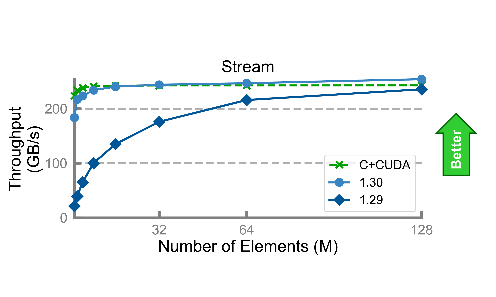

The Chapel developer community is pleased to announce the release of Chapel version 1.30.0! To obtain a copy, please refer to the Downloading Chapel page on the Chapel website.
Highlights of Chapel 1.30.0
@Attributes
Chapel 1.30.0 makes good on a longstanding intention to add a generalized attribute capability to the language. These attributes are designed to convey information to the compiler—or other tools—in a way that is integrated with the source code, extensible, and independent of keyword-based language features.
At present, a small set of attributes is supported. In particular,
there are a few attributes that can be used to characterize the
stability of a feature, as well as a chpldoc attribute for
suppressing the documentation for a particular declaration. As an
example, the attributes on the following procedure will generate a
deprecation warning for any calls to foo() while also ensuring
that chpldoc does not generate documentation for foo():
|
|
Future versions of Chapel will expand upon this initial set of attributes. To learn more about the current support, refer to the Attributes in Chapel technical note.
GPUs: Improved Performance, Features, and AMD Support
Chapel’s emerging support for GPUs saw significant performance improvements in this release, reducing the time required to launch and execute kernels. These improvements have eliminated much of the performance gap between Chapel-generated GPU kernels and hand-coded ones—particularly for less computationally intensive kernels. For example, the following graph shows the performance of a GPU Stream Triad for various problem sizes, comparing Chapel 1.30 with 1.29 and a hand-coded CUDA version:

In addition, Chapel 1.30 adds support for programming AMD GPUs using Chapel code, bringing them to a similar level of feature parity as NVIDIA GPUs in a single-locale setting.
Finally, this release adds a few new capabilities to the ‘GPU’ module, including routines to create shared arrays, synchronize between GPU threads, and set the block sizes of GPU kernels.
For further details about GPU support in Chapel, please refer to the GPU Programming technical note.
Runtime Improvements for HPE Cray EX
Chapel 1.30.0 contains a pair of new prototype execution modes that can result in significant performance boosts on Slingshot 11-based HPE Cray EX systems.
The first of these supports optionally dedicating a core per locale to handling incoming active messages. This execution mode can be increasingly attractive as the number of cores per socket grows, as a means of maximizing network responsiveness in cases where giving up a core for computation is reasonable.
The second mode enables a departure from Chapel’s traditional model of mapping each locale to its own compute node. It adds initial support for creating multiple locales per node. For compute nodes with multiple NICs, this permits each locale to bind to its own NIC, permitting the Chapel program to take full advantage of the available network resources. On compute nodes with multiple sockets, creating a locale per socket can also result in a reduction of the NUMA-related overheads that are incurred when a single locale spans multiple sockets.
In both cases, these features are currently intended for early adopters on HPE Cray EX systems. Please contact us if you have access to such a system and are interested in trying them out. In future releases, we expect to extend these features to other platforms, and to refine how they are exposed to end-users.
And so much more…
Beyond the highlights mentioned here, Chapel 1.30.0 contains numerous improvements to Chapel’s features and interfaces, including:
-
significant improvements to the capabilities and interfaces in the standard
IOmodule -
improved correctness, performance, and compile times for uses of Chapel’s
biginttype -
a refinement of the
weakclass reference type introduced in Chapel 1.29.0, currently available in theWeakPointermodule -
improved handling of passing tuples into subroutines and yielding them from iterators
Most of these language and library changes were motivated by feedback from users and/or our work towards a forthcoming Chapel 2.0 release in which the core language and library features will be considered stable.
For a more complete list of changes in Chapel 1.30.0, please refer to its CHANGES.md file.
For More Information
For questions about any of the changes in this release, please reach out to the team on Discourse.
As always, we’re interested in feedback on how we can help make the Chapel language, libraries, implementation, and tools more useful to you in your work.
Thanks to everyone who contributed to Chapel 1.30.0!